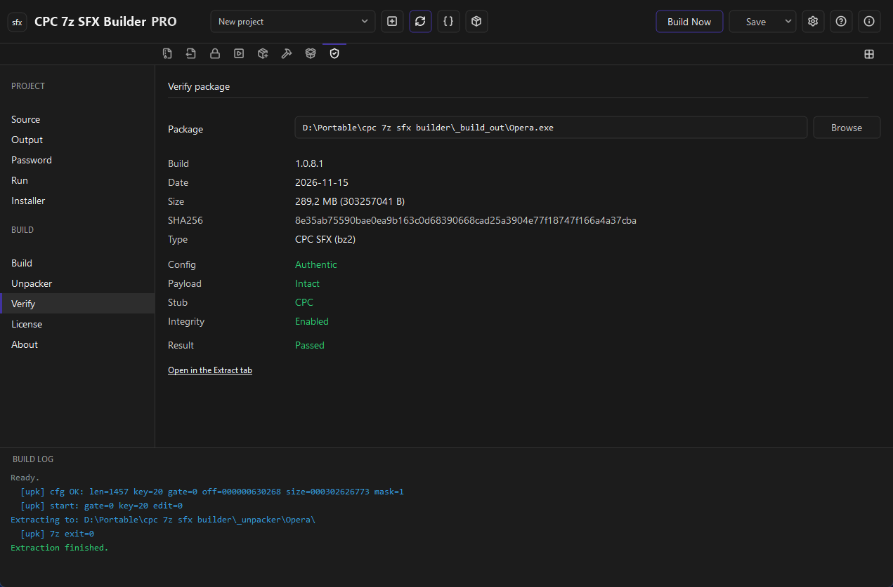
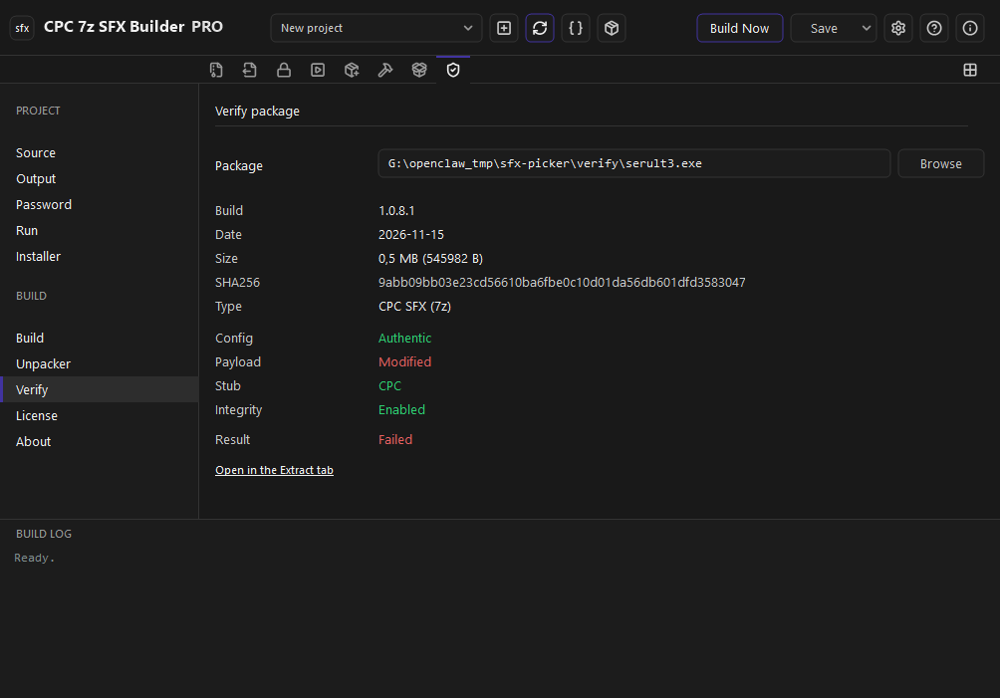

Verify a package
The Check tab performs a static analysis of SFX files before deployment. It audits the structural integrity of the configuration, the payload, the stub and the cryptographic protection without executing the code. If the file is not a CPC package, the tab determines its format and inspects the embedded archive as well.
Validation process
- Open the Check tab.
- Next to Package choose Browse and select the
.exeto analyse (an archive also works). - The analysis starts automatically.
Structure of the rows
Every analysis shows the Build, Date, Size, SHA256 and Type rows. What follows depends on the nature of the file:
- With a CPC package the Config, Payload, Stub and Integrity component rows appear, then the Result, and below them the file list taken from the configuration (with the total count and at most six file names).
- With a foreign package the Result (
Not a CPC package) appears, then the Embedded archive and Payload test rows.
The Type row
The type comes from the actual content of the file, not from its extension:
| Value | Meaning |
|---|---|
| CPC SFX (7z) | Our own, signed package |
| 7-Zip SFX (7z) | 7-Zip based self-extractor (payload is 7z) |
| RAR SFX (rar5 / rar) | WinRAR based self-extractor |
| ZIP SFX (zip) · CAB SFX (cab) | Self-extractor with a ZIP or CAB payload |
| NSIS installer (not SFX) · Inno Setup installer | Installer, not a self-extractor |
| MSI installer (not SFX) | Windows Installer package |
| Plain archive (7z, rar, zip …) | Not an executable, only an archive |
| Unknown format | No known signature found |
The search starts at the end of the executable's sections, so false signatures inside the stub do not disturb the detection.
Diagnostic results
| Component | Valid state | Exception state |
|---|---|---|
| Config | Authentic | Tampered, or Unsigned when it carries no signature; Not verifiable when the package was built by another builder version |
| Payload | Intact | Modified, or Not bound when payload binding was not enabled |
| Stub | CPC | Foreign, i.e. the SFX stub did not come from this builder |
| Integrity | Enabled | Disabled, or None (old build) |
Overall result
The Result row shows the verdict:
| Value | When it appears |
|---|---|
| Passed | Every component is in order |
| Partial | The package was built with an older build, or the protection elements are incomplete |
| Failed | The payload hash does not match, or the signature of a package built with the same version cannot be verified |
| Not a CPC package | A recognised foreign format (SFX, installer or archive) |
| Not a package | No known format could be recognised |
A package built by an earlier version of the builder cannot be verified the same way: the set of signed values has grown since, so a signature difference may appear there. Such a package gets a Partial result and the Config row reads Not verifiable, which does not indicate tampering. The row may also read Older build - cannot be fully verified.
Unauthorised changes after the build invalidate the Ed25519 signature of the configuration and the SHA256 hash of the payload, producing a Tampered or Modified component state and a Failed overall result. The detailed rules are in the Build chapter.


Identifying a foreign package
If the file is not a CPC package, the program shows these rows:
- Embedded archive: format and start offset of the inner archive, for example
rar5 @ 577608 (57.5 MB). - Payload test: the program writes the embedded archive to a temporary file and runs 7-Zip's listing and integrity check on it. The result reads for example
Integrity OK (73 file(s)), not encrypted.
The test can report the following values:
| Value | Meaning |
|---|---|
| Integrity OK (N file(s)), not encrypted | The archive can be listed and is intact |
| Integrity OK (N file(s)), encrypted | The archive is intact, the content is encrypted |
| Integrity ERROR (N file(s)) | The archive is damaged or incomplete |
| Skipped (encrypted) | An encrypted header cannot be listed without a password |
| Skipped (large payload) | The content exceeds the 1.5 GB copy limit |
| Skipped (cannot list) | The format cannot be opened by the bundled 7-Zip |
The analysis is useful before moving a package to the Unpacker tab: it shows whether the bundled 7-Zip can open it at all, how many items it contains and whether it is intact.
Safe extraction
The Open in the Extract tab link switches to the Unpacker tab with the analyzed package already loaded. The package is not executed; the contents are extracted with 7-Zip. For a password-protected package, enter the password in the Password field of the Unpacker tab before starting the extraction.